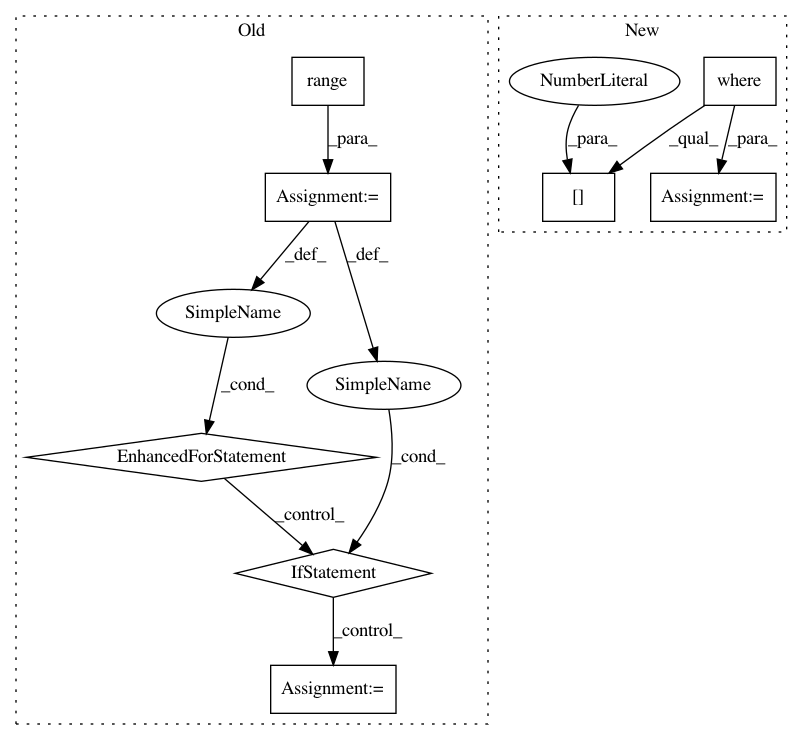

f2923023825046cfc16e05190796914215b9ee12,tests/test_hypersphere.py,TestHypersphereMethods,test_closest_neighbor,#TestHypersphereMethods#,417
Before Change
index = self.metric.closest_neighbor(point, neighbors)
closest_neighbor = points[index, :]
result = False
for i in range(n_samples):
if gs.allclose(points[i, :], closest_neighbor):
result = True
break
self.assertTrue(result)
def test_sample_von_mises_fisher(self):
After Change
neighbors = points[1:, :]
index = self.metric.closest_neighbor_index(point, neighbors)
closest_neighbor = points[index, :]
test = gs.where((points == closest_neighbor).all(axis=1))
result = test[0].size > 0
self.assertTrue(result)
def test_sample_von_mises_fisher(self):
In pattern: SUPERPATTERN
Frequency: 3
Non-data size: 8
Instances
Project Name: geomstats/geomstats
Commit Name: f2923023825046cfc16e05190796914215b9ee12
Time: 2018-09-18
Author: alice.le-brigant@enac.fr
File Name: tests/test_hypersphere.py
Class Name: TestHypersphereMethods
Method Name: test_closest_neighbor
Project Name: biocore/scikit-bio
Commit Name: b0e3b96c4d4fef0f8999934438433cb5a502fa75
Time: 2014-02-21
Author: jai.rideout@gmail.com
File Name: bipy/maths/stats/distance/anosim.py
Class Name: ANOSIM
Method Name: _anosim
Project Name: ysig/GraKeL
Commit Name: ba72837e5824eb67b8d345dd5555853221f4512a
Time: 2017-11-24
Author: y.siglidis@gmail.com
File Name: grakel/tools.py
Class Name:
Method Name: matrix_to_dict